Three journeys. One walker. Two clocks.
Between March 2024 and June 2026, I completed three virtual walking challenges through The Conqueror: Frodo's road to Mordor, Aragorn's return across Middle-earth, and Bilbo's journey to the Lonely Mountain. All three were tracked with Google Fit. This project is what I built to make sense of that data — and to see what it looked like when mapped against Tolkien's own chronology.
The Walk to Mordor is an interactive data-storytelling project. It takes 806 days of real personal walking data and maps it onto three fictional journeys through Middle-earth, letting you navigate that history through two different lenses: the actual calendar dates on which I walked, and the Shire Calendar dates of Tolkien's own chronology.
The result is a single visualization with two independent timelines. In My Time, you're watching my actual walking history unfold — when I walked more, the character moves faster. In Middle-earth Time, you're watching the story unfold as Tolkien told it — the characters move according to the dates and locations he described, and my real walking provides the total mileage that gets distributed across that framework.
These aren't two views of the same data. They're two different questions about the same person's movement.
I'd been completing the Conqueror challenges partly because the framing appealed to me: your daily steps, accumulated, become something. Frodo reaches Weathertop. You get a certificate. It's a small thing, but there's something satisfying about tying movement to narrative.
The question I kept returning to was: what does the full picture look like? Not just the challenge progress bars, but the actual shape of two years of walking — when I walked more, when I walked less, how the three challenges compared, whether my pace changed. And underneath that: what does it look like if you overlay my walking against the story itself? Not just "how far along the route am I," but "where in Tolkien's calendar does this fall, and what was happening that day?"
This project also became an exercise in a particular kind of data problem: how do you connect a real-world dataset with a fictional one? The answer required custom calendar logic, a movement model built from textual evidence, hand-traced visual geography, and some deliberate decisions about what to represent and how. The technical challenge turned out to be as interesting as the personal one.
The three challenges were completed in order, with gaps between them. Each journey maps to one of Tolkien's narrative arcs, with its own start date, target mileage, and Shire Calendar chronology.
| Character | Journey | Walking Period | Target | Miles Walked | Days Active |
|---|---|---|---|---|---|
| Frodo | The Walk to Mordor | Mar 2024 – Jan 2025 | 1,815 mi | 1,823 mi | 261 |
| Aragorn | Return of the King | Jan 2025 – Aug 2025 | 1,482 mi | 1,494 mi | 225 |
| Bilbo | The Hobbit | Jan 2026 – Jun 2026 | 1,100 mi | 1,148 mi | 142 |
All three exceeded their Conqueror target distances. Across the full project window, including gap periods between challenges: 5,196 miles walked over 806 days.
The target miles come from The Conqueror's route — a fixed distance set by the challenge. The miles walked are what I actually logged. These aren't the same number as the fictional journey distance modeled in Middle-earth Time, which is distributed according to Tolkien's chronology rather than my walking calendar.
Frodo and Aragorn's fictional journeys overlap: Aragorn's route begins at Parth Galen on the same day Frodo breaks from the Fellowship (T.A. 3019, February 26). In the Middle-earth Time view, both characters are active simultaneously through the final weeks of the War of the Ring — right up to the destruction of the Ring on March 25, 3019. Bilbo's journey takes place in T.A. 2941, almost 80 years earlier, and runs independently.
The raw data is a Google Fit export: daily step counts and distance measurements
from March 2024 through June 2026. The ETL notebook (notebooks/etl.ipynb)
processes the export into two public-safe output files — an aggregate daily record and
a journey segment table — without publishing any personally identifying health information.
The original export stays in a gitignored directory.
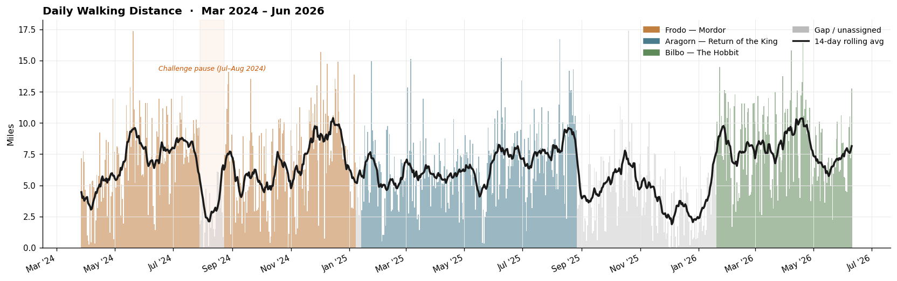
The rolling average tells the more honest story: there's no dramatic multi-week collapse at any point across two years. Variation exists, but it tends to be short-lived. The long grey stretches — between Frodo and Aragorn (Jan 2025) and between Aragorn and Bilbo (Aug 2025 – Jan 2026) — confirm that the walking habit didn't depend on an active challenge. The second gap spans 147 days at roughly 4 miles/day, slower than challenge pace but continuous.
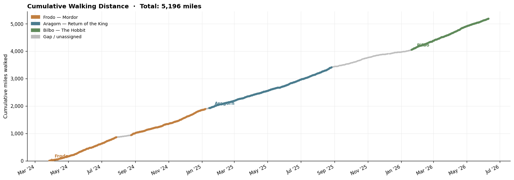
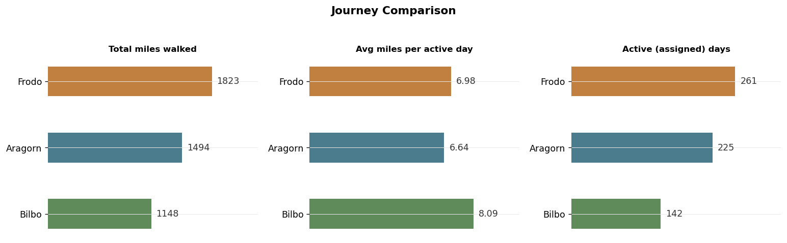
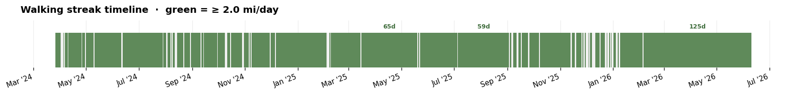
Each challenge has a distinct character in the data. Frodo's 261-day journey shows the widest spread — a median of 7.12 mi/day but a peak of 17.37 mi and 9.2% of days below 2 miles, natural variation across nine months of varied conditions. Aragorn's 225 days are the most consistent: narrower interquartile range, median 6.49 mi/day, and fewer outliers in either direction. Bilbo's 142 days have the highest median (7.93 mi) and mean (8.09 mi/day), with only a single day below 2 miles across the entire challenge — a compressed, intense effort.
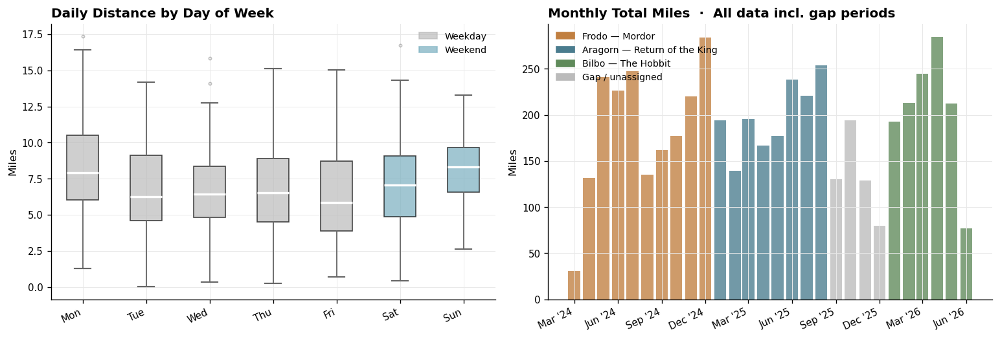
The central design question was: how do you let someone experience the same walking history through two different lenses without making one feel like a relabeled version of the other?
The answer was to treat them as genuinely independent systems that happen to share
the same map and route geometry. Both produce a { journey_id, cumulative_miles }
pair, and the map renderer consumes that pair without knowing — or caring — which
clock generated it.
The slider moves through real-world calendar dates: March 27, 2024 to June 10, 2026. Each day's actual walking distance determines how far the character advances on the fictional route. If I walked 12 miles that day, the marker moves 12 miles. If I walked 2 miles, it moves 2.
This clock answers: When did I actually walk, and what does that pace look like projected onto the map? It shows the real shape of the walking history — the challenge pause, the inter-journey gaps, the faster and slower stretches.
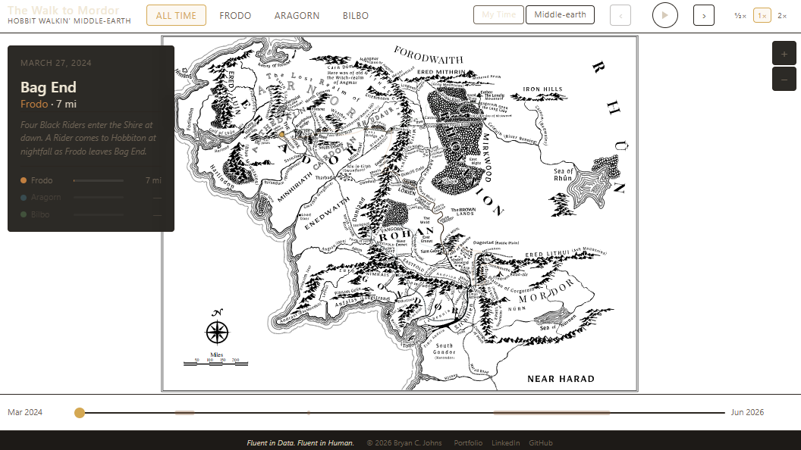
The slider moves through Shire Calendar dates: T.A. 2941 (Bilbo) and T.A. 3018–3019 (Frodo and Aragorn). Character position is interpolated across a reconstructed Middle-earth chronology, independent of the actual walking calendar. The total mileage for each journey stays fixed at the Conqueror's route distance; what changes is how that mileage is distributed across Tolkien's dates rather than mine.
This clock answers: Where does this movement fall within the story's own chronology? It lets you navigate through narrative beats — arriving at Rivendell, crossing the Bridge of Khazad-dûm, reaching Parth Galen — rather than through calendar months.
One consequence of this mode: Frodo and Aragorn share overlapping chronologies in T.A. 3019. Both journeys are active simultaneously from February 26 onward, and both reach their endpoints on March 25 — the day the Ring is destroyed and the Host of the West prevails at the Black Gate. The visualization shows both characters on the map at once.
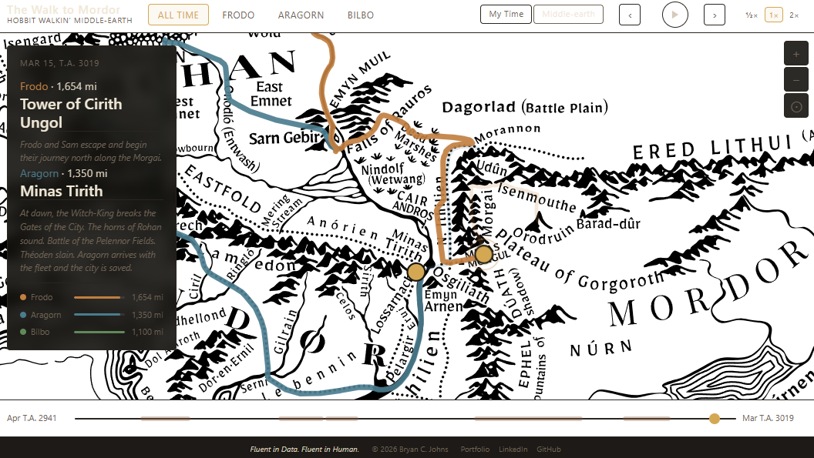
Python's datetime module works well for Gregorian calendar arithmetic —
adding days, computing intervals, sorting sequences. It cannot be used for the Shire
Calendar because the Shire Calendar has a different structure: every month has
exactly 30 days, and several days exist outside the month system entirely.
The calendar has twelve months of 30 days each (360 days), plus five intercalary days that sit outside any month:
| Day(s) | Position | Notes |
|---|---|---|
| Months 1–6 | Ordinals 1–180 | 30 days each |
| 1 Lithe | Ordinal 181 | Midsummer period |
| Midyear's Day | Ordinal 182 | Mid-year celebration |
| Overlithe | Ordinal 183 | Leap years only (year divisible by 4) |
| 2 Lithe | 183 / 184 | Shifts by 1 in leap years |
| Months 7–12 | 184–363 / 185–364 | 30 days each; shifts in leap years |
| Yule 1 | Ordinal 364 / 365 | Last day of the year |
To make Middle-earth dates computationally useful, the calendar implementation
in notebooks/me-time-generator.ipynb assigns each day an absolute
integer ordinal anchored to T.A. 2941 Yule 2 (the Shire New Year equivalent).
This ordinal is what the Middle-earth Time slider actually navigates — a sequence
of integers that can be compared, filtered, interpolated, and used for range
arithmetic without any of the complications that come from working with named
special days as raw strings.
Named special days like "Midyear's Day" or "1 Lithe" appear as date strings in
the source anchor file and in chronology.json. They are converted to
ordinals during preprocessing. Everything downstream works with the integer.
Multiple journey chronologies span the same ordinal range — Frodo and Aragorn both operate in T.A. 3019 — so the ordinal space is shared. The slider navigates the full ordinal range, and the data for each active journey is looked up separately at each ordinal position.
The Conqueror provides a fixed total mileage for each journey and a set of named segment milestones. Tolkien's text and appendices provide dated narrative events. Neither source provides a day-by-day record of how far each character traveled on any given Shire date.
The movement model is built from a hand-curated anchor file
(data/me-time-anchors.csv). Each anchor records a Shire Calendar
date, a cumulative mileage value, a place name, and a confidence level —
high for dates established in Tolkien's text or appendices,
estimated for reasoned approximations where the text doesn't
specify an exact date.
Between any two consecutive anchors, mileage is distributed linearly across the relevant Middle-earth days. Recognized rest stops — the Company's stay in Rivendell, the Fellowship's weeks in Lothlórien, Bilbo's time in the Wood-elves' halls — produce zero-movement intervals: the ordinal advances but the cumulative miles don't change.
This is a modeling choice, not a claim that Tolkien specified these daily distances. The anchor file records which dates are well-established and which are reasoned estimates. The model produces a plausible distribution of movement; it doesn't replicate the text with precision it doesn't have.
The output file, me_time.csv, contains one row per Shire Calendar day
per active journey — a date string, an ordinal integer, a journey ID, and a
cumulative miles value. This is what the browser fetches at runtime to drive the
Middle-earth Time slider.
The underlying Middle-earth map is from
mapome
by k1tesurfen, an SVG map of Middle-earth licensed
CC BY-SA 4.0.
It's loaded as a static <img> element rather than inline SVG.
A second SVG element — sized to the same viewBox (0 0 3200 2400) — sits on top
as a transparent overlay, and all route lines and markers are drawn there.
Because both elements share the same intrinsic aspect ratio, overlay coordinates
map directly to map coordinates at any zoom level.
Each journey's route in routes.json has two distinct structures:
Geometry — a dense array of {x, y} points hand-traced
over the map, following roads, river valleys, and mountain passes. This is what
gets drawn as the visible route line.
Anchors — a sparse set of calibration points, each linking a named location, a fictional cumulative mileage value, and an index into the dense geometry array. These are the connection between the fictional mileage model and the visual path.
The _resolve() function in js/map.js converts a fictional
cumulative miles value into an SVG position:
The key point is that the marker follows every bend of the hand-traced path —
it never cuts straight between calibration anchors. The stroke-dashoffset
technique reveals the completed portion of the route progressively as the marker advances.
Fictional mileage does not equal visual path length. The calibration anchors align specific mileage values to specific geographic positions on the map, but the path between them is the traced route geometry, not a straight line. The visual route is a geographic interpretation; it doesn't claim to locate every campsite or rest stop with precision.
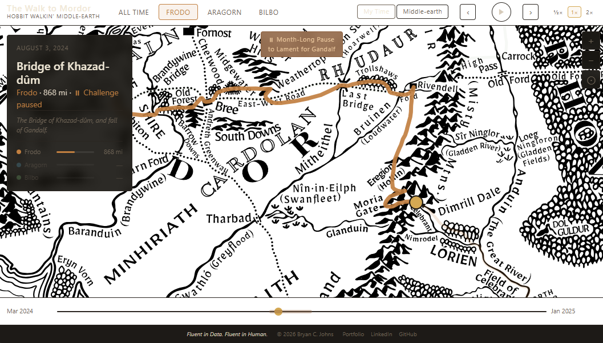
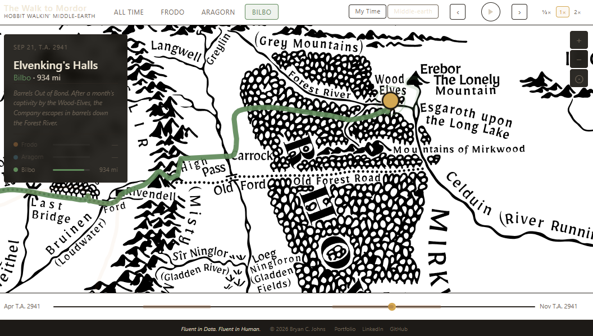
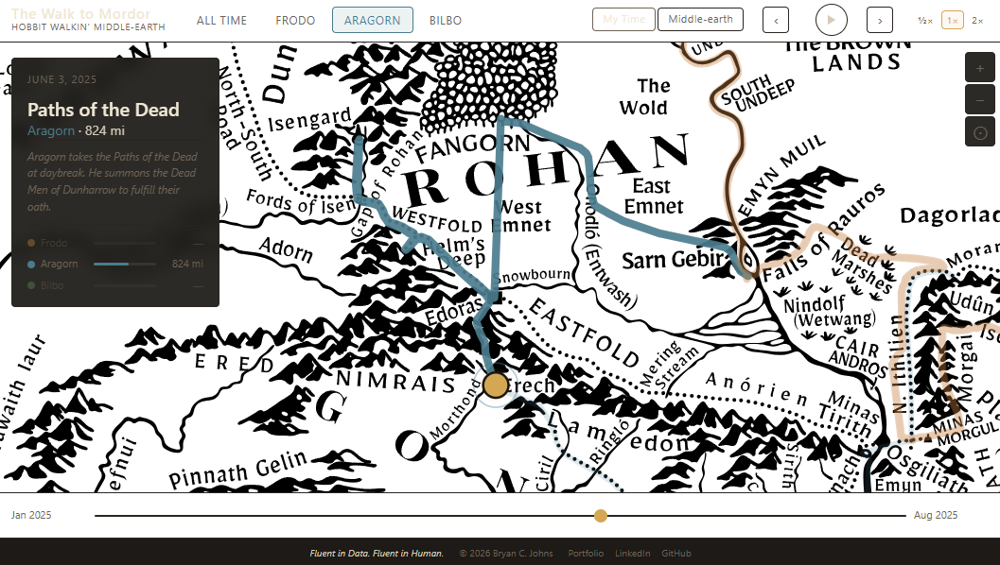
The dense route geometry doesn't exist anywhere in a form suitable for direct use.
To produce it, I built a custom interactive tool: archive/tools/route-builder.html.
The tool works by letting you zoom and pan the Middle-earth map and click to add
geometry points, following the visual path of each journey. A separate mode lets
you select geometry points and assign mileage anchors to them — linking a fictional
cumulative mileage value to a specific geographic position. The tool exports
routes.json directly, and all three routes were traced over multiple
working sessions.
Before the full route builder existed, an earlier proof of concept
(archive/proof_of_concept/poc.html) tested the fundamental overlay
technique: rendering an SVG over the mapome image with matching viewBox coordinates,
and moving a marker along a sparse set of hand-entered waypoints. That working
prototype established the coordinate system, confirmed the overlay approach, and
served as the foundation for the production rendering system.
The raw Google Fit export is a directory of daily CSV files alongside an aggregate
daily summary. notebooks/etl.ipynb processes it in several stages:
auditing the aggregate against individual daily files, selecting a canonical source,
trimming each record to the three fields actually needed (date, steps, distance in
miles), and running explicit data quality checks.
The notebook then combines the daily records with the three Conqueror journey metadata files, assigns each walking day to a journey segment or marks it as a gap, and validates every boundary decision explicitly — distinguishing intentional challenge pauses, inter-journey gaps, and any anomalous days.
The output is two small, public-safe files: data/processed/daily_steps.csv
(one row per day with date, distance, and journey assignment) and
data/processed/journeys.csv (one row per challenge segment with
boundary dates). No personal health data beyond daily aggregate distances is
published in the repository. The original export stays gitignored.
The production data file served to the browser — docs/static/data/walking.csv
— is a further export from the ETL notebook that adds cumulative mileage columns
for use by the visualization's My Time clock.
chronology.json exists as a separate data file, independent of the
movement model. Each entry records a Shire Calendar date, a cumulative mileage
anchor, a place name, and a brief description of what was happening in the story.
The separation matters. Narrative events aren't another way of calculating mileage —
they're a layer of story that runs alongside the movement data. In My Time, narrative
events are looked up by mileage: the info panel shows the most recently reached event
given your current cumulative miles. In Middle-earth Time, they're looked up by
ordinal date: the panel shows the most recently passed story beat. The same
chronology.json source works for both clocks, reached through
different lookup logic.
This means that in My Time, the narrative events reflect how far I've traveled — how much of the journey I've earned with my actual walking. In Middle-earth Time, they reflect where we are in the story — what Tolkien placed at that date, independent of pace.
The visualization is built in vanilla HTML, CSS, and JavaScript — no frameworks, no build step. The map, routes, and markers are all SVG. The whole thing is a static file served from GitHub Pages.
Journey selector — switches between All Time (all three routes visible simultaneously), Frodo, Aragorn, and Bilbo. In All Time mode, the info panel shows progress bars for all three journeys. In a single-journey mode, it shows full narrative detail for that character.
My Time / Middle-earth Time toggle — switches the clock system. The slider range, labels, and all data lookups change accordingly. The renderer itself doesn't change.
Timeline slider — scrubs through the date sequence. The left and right labels show the start and end dates for the current mode and journey selection. In Frodo's My Time view, a visual marker on the slider shows the 27-day challenge pause period (July–August 2024).
Playback — the play button animates the timeline at 35 ms/step, with ½×, 1×, and 2× speed options. Playback runs per animation frame and pauses automatically at the end of the timeline. Prev/next buttons step through the timeline one day at a time.
Map zoom/pan — mouse wheel zooms centered on the cursor; click-drag pans. On touch devices, a single finger pans and a two-finger pinch gesture zooms. Zoom buttons and a reset view button are available as alternatives to gestures. Double-clicking the map resets the view.
Pause badge — during a pause in Frodo's challenge in My Time, a floating badge appears over the map denoting a pause to lament for Gandalf, a real-world break I took between legs of the Conqueror Challenges.
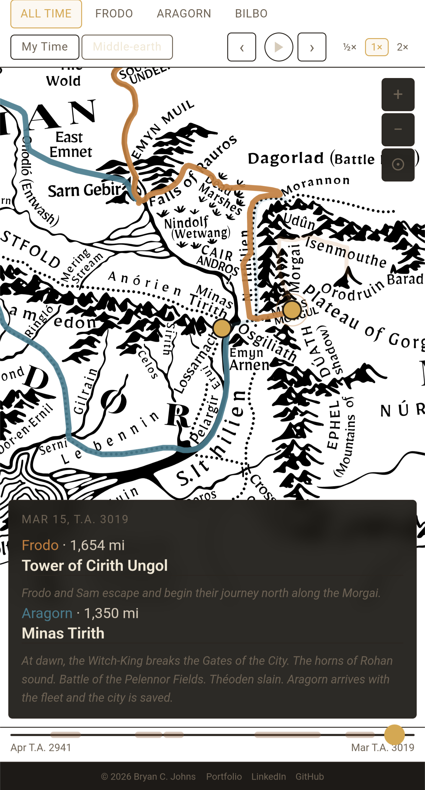
The project required several different kinds of reasoning to hold together simultaneously, and each stage had to be resolved before the next one could work:
The Conqueror issues a digital completion certificate for each challenge segment finished. Across all three journeys there are eleven segments total — from The Shire to Mordor, Rohan to Gondor, and An Unexpected Journey to the Battle of the Five Armies.
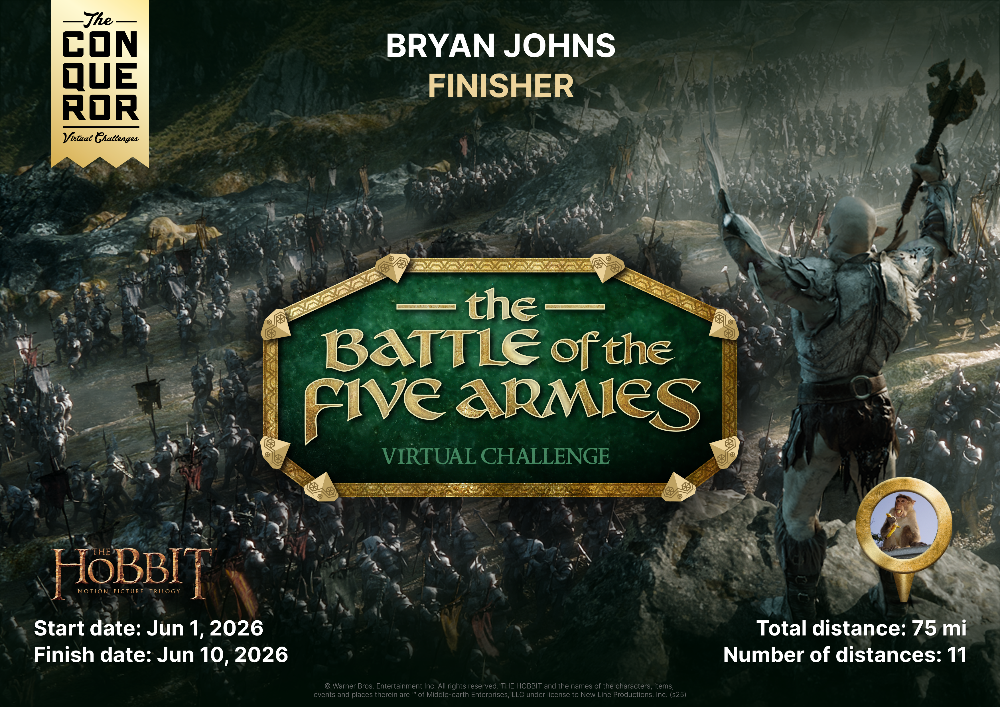
These are the certificates for the final segment of each journey. There are eight more for the segments that precede them.
⚠ The project brief notes Karen Wynn Fonstad's Atlas of Middle-earth as a possible secondary reference for route geography and chronology. Please confirm whether this source was consulted and add a credit if appropriate.